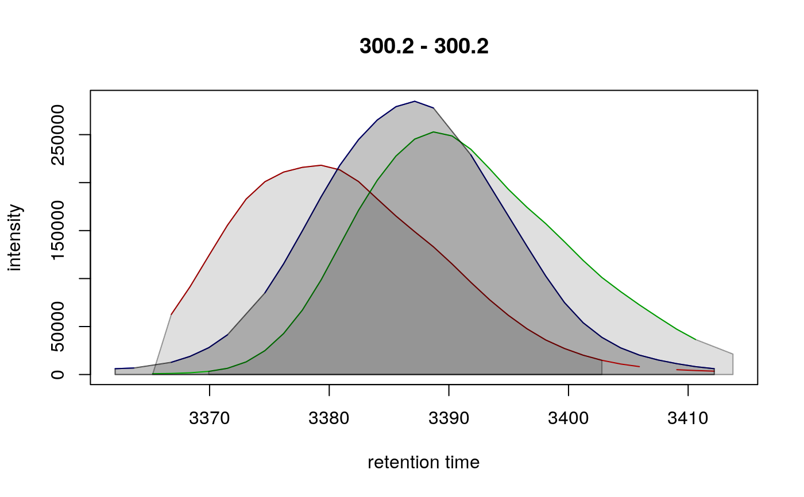

Extract ion chromatograms for features in an XCMSnExp object. The
function returns for each feature its extracted ion chromatogram and all
associated peaks with it. The chromatogram is extracted from the m/z - rt
region including all chromatographic peaks of that features (i.e. based on
the ranges of "mzmin", "mzmax", "rtmin", "rtmax" of all
chromatographic peaks of the feature).
By default only chromatographic peaks associated with a feature are included
for an extracted ion chromatogram (parameter include = "feature_only"). By
setting include = "apex_within" all chromatographic peaks (and eventually
the feature which they are part of - if feature definitions are present)
that have their apex position within the m/z - rt range from which the
chromatogram is extracted are returned too.
With include = "any" or include = "all" all chromatographic peaks (and
eventually the feature in which they are present) overlapping the m/z and rt
range will be returned.
featureChromatograms( x, expandRt = 0, aggregationFun = "max", features, include = c("feature_only", "apex_within", "any", "all"), filled = FALSE, n = length(fileNames(x)), value = c("maxo", "into"), ... )
| x |
|
|---|---|
| expandRt |
|
| aggregationFun |
|
| features |
|
| include |
|
| filled |
|
| n |
|
| value |
|
| ... | optional arguments to be passed along to the |
XChromatograms() object.
When extracting EICs from only the top n samples it can happen that one
or more of the features specified with features are dropped because they
have no detected peak in the top n samples. The chance for this to happen
is smaller if x contains also filled-in peaks (with fillChromPeaks).
filterColumnsKeepTop() to filter the extracted EICs keeping only
the top n columns (samples) with the highest intensity.
Johannes Rainer
## Load a test data set with detected peaks data(faahko_sub) ## Update the path to the files for the local system dirname(faahko_sub) <- system.file("cdf/KO", package = "faahKO") ## Disable parallel processing for this example register(SerialParam()) ## Subset the object to a smaller retention time range xdata <- filterRt(faahko_sub, c(2500, 3500)) xdata <- groupChromPeaks(xdata, param = PeakDensityParam(minFraction = 0.8, sampleGroups = rep(1, 3)))#>#>#> DataFrame with 11 rows and 10 columns #> mzmed mzmin mzmax rtmed rtmin rtmax npeaks #> <numeric> <numeric> <numeric> <numeric> <numeric> <numeric> <numeric> #> FT01 300.2 300.2 300.2 3387.14 3379.32 3390.27 4 #> FT02 301.0 301.0 301.0 2787.77 2786.20 2792.46 3 #> FT03 326.2 326.2 326.2 3416.88 3415.31 3424.70 3 #> FT04 343.0 343.0 343.0 2684.48 2678.22 2686.04 3 #> FT05 344.0 344.0 344.0 2682.91 2679.78 2686.04 3 #> FT06 365.0 365.0 365.0 2684.48 2679.78 2686.04 3 #> FT07 496.2 496.2 496.2 3335.50 3316.72 3340.19 3 #> FT08 496.2 496.2 496.2 3402.79 3384.01 3410.62 3 #> FT09 522.2 522.2 522.2 3387.14 3344.89 3434.09 6 #> FT10 523.2 523.2 523.2 3387.14 3344.89 3434.09 6 #> FT11 532.2 532.2 532.2 3482.61 3476.34 3488.86 3 #> X1 peakidx ms_level #> <numeric> <list> <integer> #> FT01 3 35, 91,129,... 1 #> FT02 3 10, 63,117 1 #> FT03 3 37, 94,132 1 #> FT04 3 6, 58,114 1 #> FT05 3 3, 56,112 1 #> FT06 3 7, 59,115 1 #> FT07 3 47,103,138 1 #> FT08 3 48,104,139 1 #> FT09 3 52, 53,105,... 1 #> FT10 3 38,39,97,... 1 #> FT11 3 49,102,137 1## Extract ion chromatograms for the first 3 features. Parameter ## `features` can be either the feature IDs or feature indices. chrs <- featureChromatograms(xdata, features = 1:3) ## Plot the XIC for the first feature using different colors for each file plot(chrs[1, ], col = c("red", "green", "blue"))